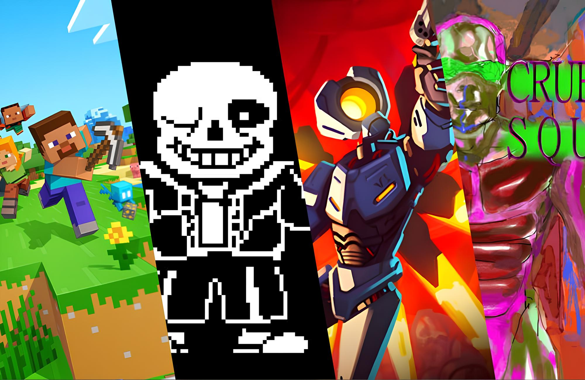
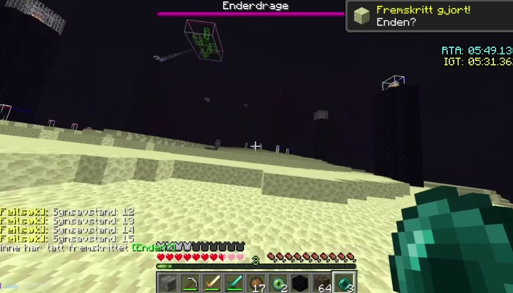
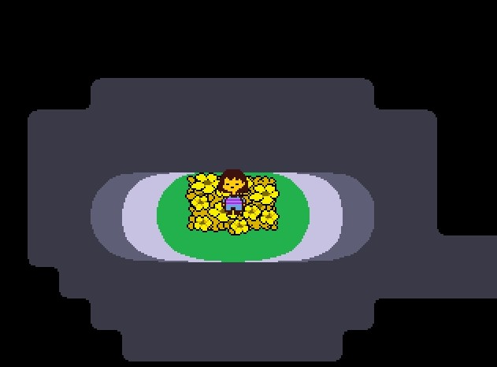
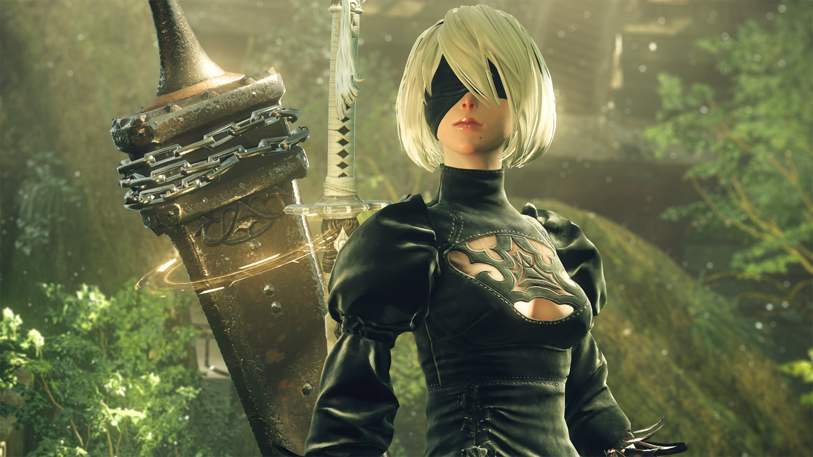
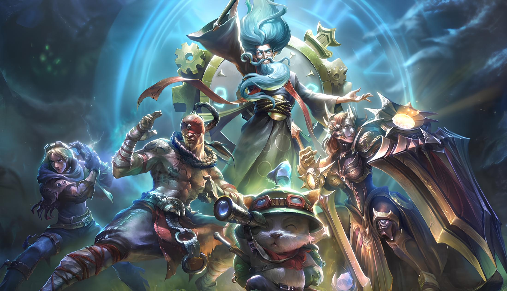

The blog
All posts in one place. If you're looking to find personally written guides, news, reviews, and recommendations, then this is the best video game blog for you!

5 Must-Try Video Games Before You Die
From a subterranean world full of talking skeletons to surreal dystopia, these are the games that are definitely worth your time.
Read the post →
The Minecraft Speedrun World Record That Could've Been
How speedrunner Skycrab lost a once-in-a-lifetime record to an Enderman — and the redemption run that followed.
Read the post →
How to Unlock All Undertale Routes (No Spoiler)
A spoiler-free guide to the Neutral, Pacifist, and Genocide endings, and the order to play them in.
Read the post →
A Gaming Masterpiece – Nier: Automata Review
Why Yoko Taro's action-RPG still holds up years after release, from its combat to its genre-crossing soundtrack.
Read the post →
The League Classic Patch is Here, Should You Play It?
Riot brought back the old Summoner's Rift. Here's how it changes the game, and whether it's worth your time.
Read the post →